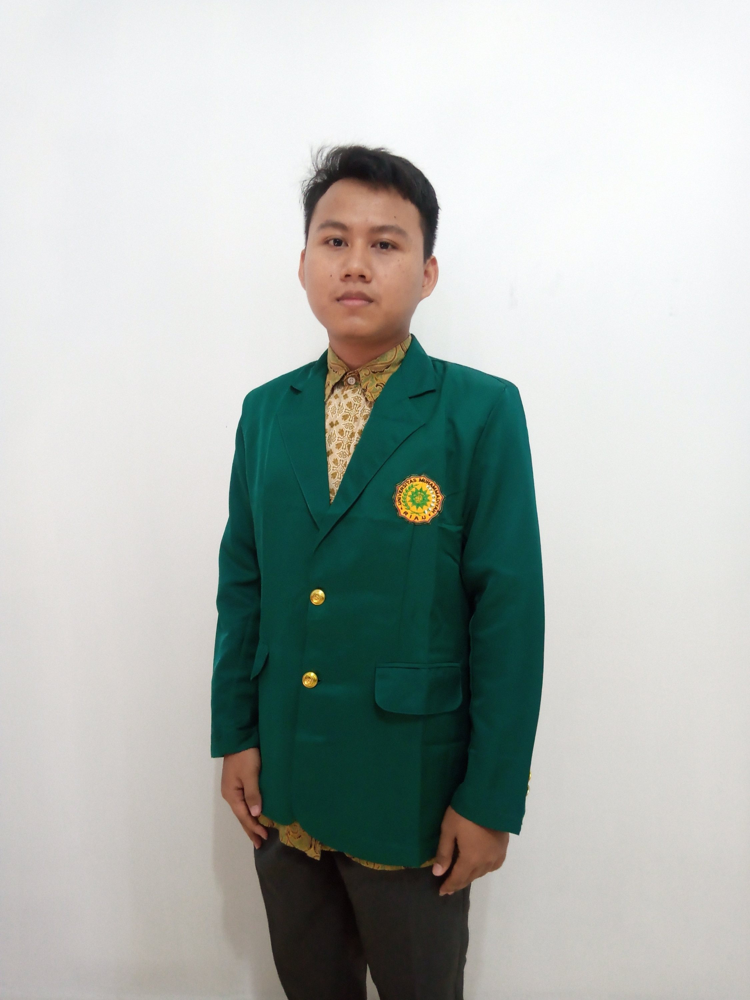

Welcome to my Personal Web

About Me
Hi, Nama saya adalah Pristio Medi. Saya adalah mahasiswa Teknik Informatika di Universitas Muhammadiyah Riau. Saya memiliki minat di bidang Matematika dan Komputer. Semangat dan rasa ingin tahu menjadi modal saya dalam belajar.
- Name: Pristio Medi
- Location: Bengkalis, Riau, Indonesia
- Skills: HTML, CSS, JavaScript